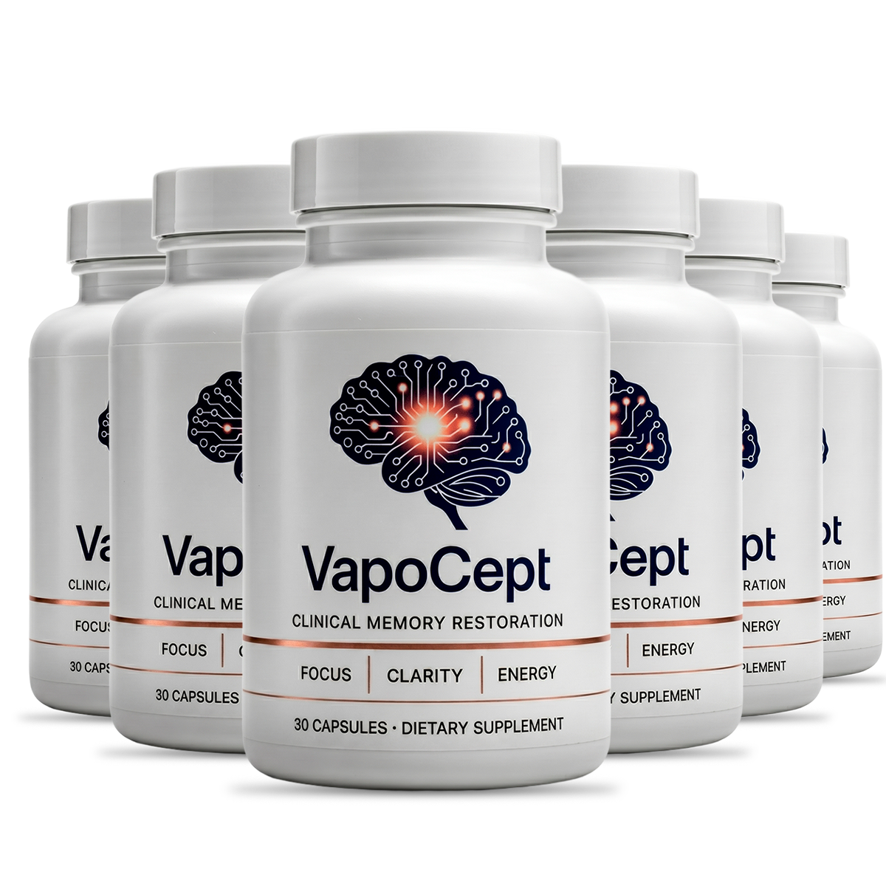

What Is VapoCept And How Does It Work?
Your brain burns through more oxygen than any other organ in your body. And most of the time, the reason your memory stalls and your focus drifts has nothing to do with your brain cells — it has everything to do with how much oxygen actually reaches them.
Researchers call it the oxygen throttle. Over the decades, the tiny blood vessels feeding your brain quietly narrow. Not because they are damaged — because the signal that keeps them relaxed weakens with age. The result is a slow, invisible choke on the fuel supply your neurons depend on every second you think, remember, or concentrate.
VapoCept is a once-daily capsule built around the nitric oxide pathway — the same signaling system your body already uses to keep blood vessels open. Instead of pushing a stimulant into your system and hoping for the best, the formula feeds the raw materials your body needs to produce its own nitric oxide again, reopening the oxygen throttle from the inside.
Think of it like unkinking a garden hose that has been pinched for years. The water pressure was always there — the line just needed to be opened. VapoCept supplies the amino acid precursors and cofactors that tell those vessel walls to relax, letting blood carry oxygen and nutrients back to the neurons that handle recall, focus, and processing speed.
It is built for adults who notice the fog rolling in — the blanking out mid-sentence, the tip-of-the-tongue moments that used to be rare and now happen every day. One capsule each morning, taken with water before breakfast, and the formula goes to work quietly alongside your normal routine. No caffeine crash, no jittery edge, no complicated protocol.
VapoCept is not a one-week miracle fix. The oxygen throttle did not close overnight, and it will not fully reopen overnight either. Consistent daily use over 60 to 90 days gives the formula the time it needs to build steady, lasting support for the blood flow your brain has been missing.
VapoCept Ingredients
Every capsule delivers a precise stack of amino acids, vitamins, and natural compounds that work together on a single goal: restoring the nitric oxide signal that keeps the oxygen throttle open.
- L-Arginine: The primary building block your body converts directly into nitric oxide. It triggers vasodilation in brain capillaries, widening the channels that carry oxygen-rich blood to neurons responsible for memory and focus.
- L-Arginine AKG: An advanced salt form of L-Arginine engineered for slower, steadier absorption. Where standard L-Arginine delivers a short burst, AKG extends the vasodilating window so support lasts through the day instead of fading by mid-morning.
- L-Citrulline HCL: The recycling engine of the formula. After L-Arginine converts to nitric oxide, L-Citrulline catches the byproduct and feeds it back into the cycle, creating a continuous loop of production rather than a single pass.
- L-Citrulline Malate: Pairs the recycling action of citrulline with malic acid, a compound central to cellular energy production. It helps clear metabolic waste from neurons while keeping the nitric oxide loop running efficiently.
- Niacin (Vitamin B3): Powers the NAD+ pathway — the energy currency neurons rely on to fire, repair, and maintain synaptic connections. Without adequate B3, even well-oxygenated neurons struggle to convert fuel into function.
- Beta-Alanine: Raises intracellular carnosine, a powerful antioxidant that shields neurons from oxidative stress. While the other ingredients open the fuel lines, Beta-Alanine protects the neurons that receive the fuel.
The logic behind the blend is straightforward: L-Arginine and L-Arginine AKG open the throttle, L-Citrulline HCL and Malate keep it open, Niacin makes sure the neurons can actually use the oxygen that arrives, and Beta-Alanine guards them while they work. Six ingredients, one mechanism, no filler.
VapoCept Side Effects
VapoCept is formulated with amino acids and vitamins that already circulate in a healthy body. The formula does not introduce foreign compounds or synthetic stimulants — it supplies precursors the body recognizes and knows how to process.
Every batch is produced in an FDA-registered, GMP-certified facility in the United States, with ingredients tested for purity before they reach the capsule. The vegetable capsule itself is free from common allergens and artificial additives.
There are no widespread reports of adverse reactions among users following the recommended single-capsule daily serving. The absence of caffeine and synthetic stimulants means no jitters, no energy crashes, and no interference with normal sleep patterns — a common frustration with other cognitive supplements.
As with any dietary supplement, anyone with an existing medical condition or currently on prescription medication should consult a healthcare professional before starting.
VapoCept Dosage
Each bottle of VapoCept holds 60 capsules — a full 60-day supply at the recommended dose of one capsule per day. That is two months of support from a single bottle, with no complicated schedule to follow.
Take one capsule each morning with a glass of water, ideally before your first meal. The timing matters because the amino acids absorb more efficiently on a lighter stomach, giving the nitric oxide cycle a head start before your day gets busy.
Consistency is what separates a noticeable difference from a bottle that sits on the shelf. The formula builds cumulative support over weeks — most users describe the clearest changes after 60 to 90 days of uninterrupted daily use. Skipping days resets the momentum.
VapoCept is also available in multi-bottle bundles for users who want to commit to a longer stretch without worrying about reordering. The larger options bring the per-bottle cost down significantly, and free shipping is included on select packages.
VapoCept – Refund Policy
Every order of VapoCept is covered by a 60-day money-back guarantee from the date of purchase. That window gives you a full two months to take the formula daily and evaluate the results for yourself.
The guarantee exists because the team behind VapoCept is confident enough in the formula to let the product prove itself on your terms. Sixty days lines up precisely with the period most users describe as the turning point — the stretch where cumulative support from the oxygen throttle pathway becomes something you can feel in your day-to-day clarity.
For complete terms and conditions, the official VapoCept website has the details.
VapoCept Customer Reviews
 Robert Callahan
Denver, CO
Verified Purchase – 6 Bottles
Robert Callahan
Denver, CO
Verified Purchase – 6 Bottles
"I used to be the one who ran every meeting. Sharp, organized, three steps ahead. Then sometime around my late fifties it started slipping. I would lose the thread halfway through a sentence and just trail off, staring at people. My wife started finishing my thoughts for me — that one stung. I found VapoCept while looking for something that was not another prescription with a side effect sheet longer than my arm. Around week five, I noticed I was holding conversations again without that panicked scramble for the next word. By the end of the second bottle I chaired a full department review and did not blank once. That had not happened in over a year."
 Patricia Nguyen
Tampa, FL
Verified Purchase – 3 Bottles
Patricia Nguyen
Tampa, FL
Verified Purchase – 3 Bottles
"Brain fog does not sound that bad until you are living in it. Everything felt like I was thinking through wet cotton. I would read a recipe I have made a hundred times and still have to re-read step three twice. Grocery runs took twice as long because I would just stand in the aisle trying to remember what I came for. A friend mentioned VapoCept and I figured one more bottle of something could not hurt. The change was not dramatic at first — it was more like the cotton started thinning out. By the middle of bottle two, I cooked Thanksgiving dinner from scratch without looking at a single note card. My daughter asked me what I had been doing differently."
 James Whitfield
Scottsdale, AZ
Verified Purchase – 6 Bottles
James Whitfield
Scottsdale, AZ
Verified Purchase – 6 Bottles
"I am a retired engineer. I spent forty years solving problems in my head before I ever picked up a pencil. When the fog set in, it did not feel like aging — it felt like somebody turned the lights down in the room where I do my thinking. I tried the puzzle apps. I tried fish oil. I tried one of those prescription options and quit after two weeks because the side effects were worse than the brain fog. VapoCept was the first thing that felt like it was actually reaching the problem. No buzz, no crash, just a quiet return of something I had been missing. I ordered six bottles because I do not plan on stopping."
VapoCept – Where To Buy
VapoCept is not sold through Amazon, eBay, Walmart, or any other third-party marketplace. The product is available exclusively through the official website, and that exclusivity is deliberate.
Third-party listings claiming to carry VapoCept have no guarantee of authenticity. Without control over storage, handling, or expiration, there is no way to verify that what arrives in the bottle matches the tested formula produced in the GMP-certified facility. And purchases made outside the official channel are not covered by the 60-day money-back guarantee — no exceptions.
Buying directly from the official source is the only way to confirm you are receiving the genuine product, with access to the full guarantee and customer support.
To ensure you're getting the authentic product, most users choose to visit the official website directly.
Is VapoCept A Scam?
After looking at the formula, the production standards, and the firsthand accounts, VapoCept does not carry any of the markers of a scam product. It is a clearly formulated supplement with a specific, traceable mechanism — the oxygen throttle pathway — backed by amino acid precursors that the body already uses to produce nitric oxide.
The manufacturing happens in an FDA-registered, GMP-certified facility. The 60-day guarantee puts the risk on the manufacturer, not on you. And the ingredient list reads like a focused protocol, not a kitchen-sink blend padded with trendy extracts.
Is it going to work the same for every person who opens the bottle? Probably not. Cognitive support is personal, and how much of a difference you notice depends on where your baseline is, how consistent you are with it, and whether the oxygen throttle is the piece your brain has been missing.
What sets VapoCept apart from the pile of brain supplements making vague promises is that the mechanism is specific, the ingredients match that mechanism, and the guarantee means you are not betting anything you cannot get back.
Try it for the full sixty days. If nothing changes, send it back and you are out nothing but a few minutes of your time.
As with any dietary supplement, consulting a healthcare professional before starting is always a reasonable step.

For those who want to verify product details or check current availability, the official VapoCept website remains the safest and most reliable option.